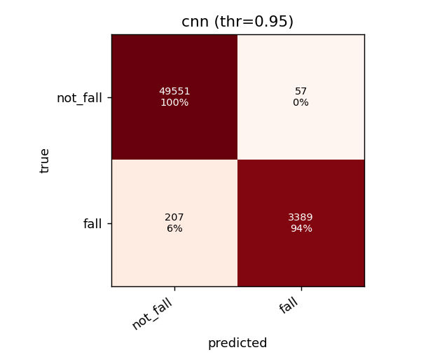
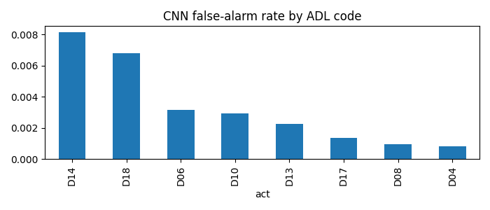
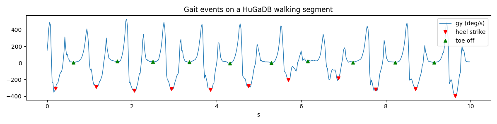
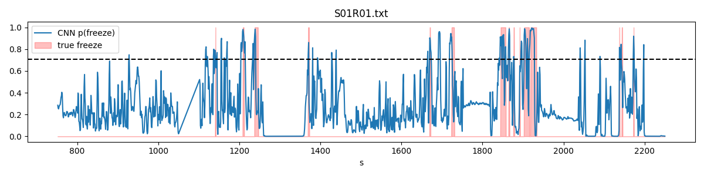
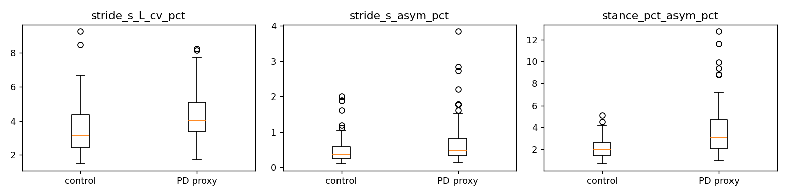
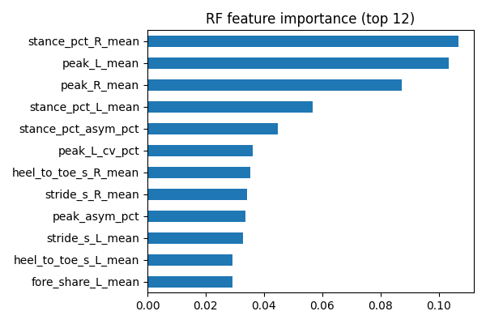

Next-generation pressure-sensing insoles paired with sub-millimeter inertial measurement units for laboratory-grade gait analysis outside the clinic.
One shoe, three portals
Everyone sees what they need
Engineering Prototype
Follow the project
IntelliStride is an ongoing capstone engineering project exploring assistive gait telemetry.
Connected: ESP32-DevKit-01
syncUpdate Rate: 120 Hz · Online
Firebase: Live
Session — 13 Oct 2026 · IST
badge
Active ParticipantVidula Nijhawan (P1) · 160 cm, 52 kg
LIVE STREAMING — 120 Hz
timerT+00:24:18.42
Gait CadenceSteady State
114SPM
Gait Symmetrybalance
98.2%
Mean Stridestraighten
1.42 m
Stance Durationhourglass_top
0.68 s
Left Stride (49.1%)Dynamic Bilateral EquilibriumRight Stride (50.9%)
Left FootRight Foot
Dynamic Plantar Pressure Mapping
Prototype — 3 FSR sensors per insole
Raw ADC: 3042
Left Insole (Assumed)
Fore 800Mid 500Heel 1024
Right Insole (Active Sensor)
Fore 720Mid 530Heel 1050
Center of Pressure (CoP) Path
Pressure Gradient:Higher ADC
Kinematic Waveforms
Raw Accelerometer & Gyroscope Streams
Online · 120Hz
Raw Accelerometer Magnitude (g)1.18 g
Raw Gyroscope Magnitude (°/s)4.8 °/s
IntelliStride Module 1
Calibrated
Battery State88%
Signal RSSI-42 dBm
IMU Core Temp24.2°C
IntelliStride Module 2
Calibrated
Battery State84%
Signal RSSI-45 dBm
IMU Core Temp24.5°C
verified_userAnomaly Monitor
Real-Time
STATUS: NORMAL
No threshold-exceeding motion events detected in current session.
exploreOrientation & Gyro
Rotation rate
Yaw+2.4°/s
Pitch-0.8°/s
Roll+1.2°/s
MPU6050 • ONLINE
Firebase: Live
syncUpdate Rate: 100 Hz · Live
Demo Session — 2026-09-12
Fall Risk Analysis
Real-time MPU6050-based gait instability and fall-risk monitoring
Current Fall RiskPrototype Score
—/ 100
LOW RISK
Sensors online. Current movement pattern is within normal walking baseline.
Haptic Feedback
vibration
Vibration MotorREADY
Vibration motor standby. No alert condition active.
Emergency Alert
emergency
Alert StatusSAFE
No emergency condition detected.
Last Event:None recorded
IMU Sensor Telemetry
MPU6050 6-axis inertial measurement unit — raw sensor readings
MPU6050
Accelerometer
Ax—
Ay—
Az—
Magnitude— g
Gyroscope
Gx—
Gy—
Gz—
Magnitude— °/s
Orientation
Pitch—
Roll—
Combined Tilt— °
Real-Time Acceleration
3-axis accelerometer rolling window
● LIVE
Ax
Ay
Az
g
Angular Velocity
3-axis gyroscope rolling window
● LIVE
Gx
Gy
Gz
°/s
Risk Feature Analysis
Prototype features — engineering evaluation only
5 Features
Acceleration Magnitude
—NORMAL
Angular Velocity
—NORMAL
Orientation Tilt
—NORMAL
Motion Instability
LOWNORMAL
Sudden Motion Event
—NOT DETECTED
Risk Thresholds
Configurable prototype values
NORMAL0 – 39
MODERATE40 – 69
HIGH70 – 100
Prototype thresholds. Final values require calibration and validation using experimental sensor data collected from the target population.
Fall-Risk Trend
Historical risk score — current session
Moderate ≥40
High ≥70
← OlderRisk Score (0–100)Now →
Recent Risk Events
Last 1 events — current session
LIVE DATA
Timestamp
Risk Score
Risk Level
Acceleration
Angular Vel.
Action Taken
infoPrototype monitoring system. Risk thresholds and algorithms are intended for engineering evaluation and require further validation before clinical use. This system does not constitute a medical diagnosis, clinically validated fall prediction, or guaranteed fall-prevention mechanism. Consult a qualified engineer or clinician before deploying in any research or clinical setting.
Calibration Details
Risk Score Thresholds
LOW Risk Maximum39 / 100
MODERATE Risk Range40 – 69
HIGH Risk Minimum70 / 100
Normal Walking Baseline (Prototype)
Acceleration Magnitude0.9 – 1.3 g
Angular Velocity0 – 20 °/s
Combined Tilt0 – 8°
Sudden Accel. Delta< 0.40 g
Risk Score Weights (Prototype)
High Acceleration (≥ 2.5 g)+40 pts
Elevated Acceleration (≥ 1.5 g)+25 pts
High Angular Velocity (≥ 80 °/s)+40 pts
Elevated Angular Velocity (≥ 30 °/s)+20 pts
Sudden Acceleration (≥ 0.4 g delta)+15 pts
High Tilt (≥ 15°)+10 pts
Mild Acceleration (≥ 1.3 g)+10 pts
Mild Angular Velocity (≥ 20 °/s)+8 pts
Elevated Tilt (≥ 8°)+5 pts
NoteTiers within one feature do not add; total capped at 100
These are prototype engineering values. To calibrate, collect MPU6050 readings during controlled walking trials and falls in a laboratory setting. Use the resulting data distribution to set optimal thresholds for the target population and sensor placement.
Choose who you are. Each portal opens a different dashboard.
infoDemo login for the capstone prototype. Credentials are filled in for you:
Predictive analysis
ML Model Results
We trained four models on public research datasets, then tested each one only on people it had never seen. Two are strong, two are moderate, and every number below was measured, not estimated.
At a glance
Model
Question it answers
Tested on
Key result
Verdict
1 · Fall detection
Is this a fall?
SisFall · 38 people · 53,204 windows
Catches 94.2% of falls at 99.9% specificity (AUC 0.997)
Strong
2 · Activity + gait
What is the wearer doing? What is their cadence?
HuGaDB · 18 people · 12,032 windows
97–98% on walking, running and stairs; 98.4% over 5 classes after merging sit + stand
Strong
3 · Freezing of gait
Has the wearer frozen mid-walk?
Daphnet · 10 patients · 17,790 windows
Catches 80–92% of 225 freeze episodes, median 0.7 s after onset
Moderate
4 · Pressure stability
Is the gait irregular or lopsided?
PhysioNet gaitpdb · 165 people · 5,923 windows
Subject-level AUC 0.83; stance asymmetry differs strongly between groups (p = 1.5×10⁻⁸)
Moderate
How the models were built and tested
Public data, matched to the shoe. Each dataset was converted to the shoe's units (g, deg/s, raw pressure zones), rotated to the shoe's axes and resampled to 50 Hz.
Short windows. Signals were cut into 2-second windows (10 s for pressure, since variability needs several strides).
Two models per task. A Random Forest on hand-made features (means, peaks, jerk, frequencies) and a small 1D-CNN on the raw signal.
Tested on unseen people. 5-fold cross-validation split by person: no one appears in both training and testing, so the scores reflect new users.
Exported for the browser. The final CNNs were exported to ONNX (raw window in, probabilities out) and checked to give the same answers as the training code (difference below 10⁻⁶).
Output: probability that the last 2 s contained a fall, from the 6 IMU channels. An alert fires above the chosen threshold.
Model
Falls caught (sensitivity)
Specificity
AUC
False-alarm windows / hour of daily activity
Random Forest
90.4%
99.97%
0.999
1.1
1D-CNN (exported)
94.2%
99.9%
0.997
4.1

CNN: 3,389 of 3,596 fall windows caught; 57 false alarms in 49,608 normal windows.

Which daily activities fool it: rolling over while lying (D14), stumbling while walking (D18), fast stairs (D06), dropping into a chair (D10).
What it shows. Falls are very distinct in IMU data, so both models do well. The CNN catches more falls; the RF raises fewer false alarms. Older participants' daily activities caused twice as many false alarms (6.3/h vs 3.0/h for young adults), and 9 of the 57 CNN false alarms came from "stumble while walking", which a stumble detector arguably should flag.
Limits. SisFall's sensor sat on the waist, ours sits on the foot. Falls were performed by young adults onto mats.
2 · Activity recognition + gait events
Strong
Output: the current activity (walking, running, stairs up, stairs down, sitting, standing), plus heel-strike and toe-off times from the gyroscope, which give cadence and stride variability.
Activity (CNN, F1 score)
Walking
Running
Stairs up
Stairs down
Sitting
Standing
Per class
0.98
0.99
0.97
0.98
0.39
0.63
0.70Macro-F1, all 7 classes as trained
98.4%Accuracy with sitting + standing merged into "stationary"
Moving activities sit on the diagonal. The red block bottom-right is sitting vs standing.

Detected heel strikes (red) and toe-offs (green) on a real walking trace: one heel strike per stride.
What it shows. The headline 0.70 hides a simple fact: a foot sensor at rest looks the same whether you sit or stand, because the foot is flat on the floor either way. Everything that moves is recognised almost perfectly. Our pressure sensors could separate the two later (standing loads the foot, sitting mostly doesn't).
Limits. 18 healthy young adults. The "transition" class (sitting down / standing up) had only 32 windows and was never recognised.
3 · Freezing-of-gait detection
Moderate
Output: probability that the wearer is in a freeze (a sudden inability to take the next step), from the accelerometer. Two high windows in a row would trigger a cue.
Model
Freeze episodes caught (of 225)
Median delay after onset
AUC
Sensitivity / specificity at a balanced threshold
Freeze index (classic baseline)
90%
0.68 s
0.74
60% / 75%
Random Forest
92%
0.72 s
0.87
82% / 79%
1D-CNN (exported)
80%
0.68 s
0.85
78% / 75%

One patient's walk: CNN freeze probability (blue) against the true freezes (red). Most freezes are caught, but there are spikes during normal walking too.
What it shows. Counted per freeze episode, the models catch most freezes within about 0.7 s. Counted per 2-s window, they are weaker and vary a lot between patients (balanced accuracy 0.51 to 1.0). Here the simpler Random Forest beat the CNN. The target of 80% sensitivity and 90% specificity was not met.
Limits. Only 10 patients. This model does not detect or diagnose Parkinson's.
4 · Pressure-based gait stability
Moderate
Output: a 0–100 gait-irregularity score from the three pressure zones of both shoes, plus the left–right asymmetry and stride variability behind it. The research insoles' 8 sensors were collapsed to our 3 zones.
Measure (per person)
Regular gait (controls)
Irregular gait (PD group)
Difference significant?
Stance-time asymmetry
1.9%
3.1%
Yes, p = 1.5×10⁻⁸
Stride-time variability
3.2%
4.1%
Yes, p = 0.001
Peak-load asymmetry
3.6%
4.5%
Yes, p = 0.003
Stride-time asymmetry
0.37%
0.49%
Yes, p = 0.006
Heel-to-toe roll-over time
0.41 s
0.42 s
No, p = 0.19
0.83Subject-level AUC, Random Forest
0.79Subject-level AUC, CNN (exported)
71% / 79%CNN sensitivity / specificity per window at a balanced threshold

Stride-time variability and asymmetry, per person: higher in the irregular-gait group.

What the Random Forest relied on: stance time and peak load first.
What it shows. Even reduced to three pressure zones like ours, the insole data still separates regular from irregular gait, with asymmetry and variability as the clearest signs. The classifier itself is moderate (target AUC 0.85, reached 0.83), and the CNN overfitted its training data.
Limits. The Parkinson's label is only a stand-in for "irregular gait". This is not a diagnosis. Research insoles are not identical to our FSRs.
How the models fit into IntelliStride
Model
Who it is for
Where it would appear
Status
Fall detection
Caretaker, doctor
Fall alert next to the rule-based fall-risk score
Trained and exported (ONNX)
Activity + gait
Wearer, doctor
Current activity, cadence and stride variability
Trained and exported (ONNX + gait-event script)
Freezing of gait
Caretaker, doctor
Freeze alert and cue event
Trained and exported (ONNX)
Pressure stability
Doctor
Irregularity score, asymmetry and variability across both shoes
Trained and exported (ONNX)
The dashboards today run the rule-based fall-risk engine on recorded readings. Running the four models live needs the shoes to stream continuous 50 Hz data, which is the next firmware step, followed by testing on our own volunteers.
What we learned
Simple can win. The Random Forest matched or beat the CNN on three of the four tasks.
Sensor position matters. A foot sensor cannot tell sitting from standing, and models trained on waist or ankle sensors will lose accuracy on a shoe.
How you count changes the story. Freeze detection looks weak per window but catches most real freeze episodes.
Three pressure zones carry real information. Asymmetry and variability separate regular from irregular gait.
info All results come from public research data, tested on unseen people. None are clinically validated, and our own shoes have not been tested with these models yet.
How to use
Using IntelliStride
Set up the shoes once, then each person signs in to their own portal.
Set up (everyone)
Power on both shoes. Each shoe has its own ESP32 module. Charge the power module before a session.
Put the shoes on. Check the insole lies flat so all three pressure sensors (heel, midfoot, forefoot) touch the foot.
Let them connect. The shoes join the configured Wi-Fi and send readings to Firebase on their own. Left and right shoes are stored separately.
Sign in. Open this site, press Sign In and choose your portal: Wearer, Caretaker or Doctor / Admin.
Walk normally. Readings appear on the dashboard within seconds. Nothing needs to be pressed during the walk.
directions_walk Wearer
My Day shows your status, your foot-pressure balance and today's alerts in plain words.
Green / amber / red is the prototype fall-risk level: low, moderate, high.
If you see red often, sit down, rest and tell your caretaker or doctor.
An obstacle warning means the toe sensor sees something closer than 1 m ahead.
family_restroom Caretaker
Wearer Status shows the current risk level live from the shoes (a LIVE badge appears), or the last recorded session when the shoes are off.
Alerts lists every moderate and high reading with its time. Mark each one as checked once you've followed up.
Location shows the last GPS fix from the shoe, with a link to open it in maps.
Fall Risk Analysis gives the full breakdown behind each score.
stethoscope Doctor / Admin
Live Shoes shows both shoes in real time: pressure, motion, obstacle sensor, GPS and fall risk, plus sensor checks.
Recorded Readings shows every participant's recorded session.
Fall Risk Analysis explains the rule-based score feature by feature.
Session Analytics compares all recorded sessions and lists the full session history.
ML Model Results shows the four trained models, how they were tested and what they found.
info IntelliStride is a student engineering prototype. Scores and model outputs are not clinically validated and must not be used for medical decisions.
ONLINE13 Oct 2026 · IST15 participants
Live Readings
Latest telemetry per participant
All readings — 13 Oct 2026
Ordered by time across all participants
LIVE STREAM
Date · Time
Participant
Phase
FSR F/M/H
|a| g
|ω| °/s
Tilt °
Dist cm
GPS
Score
Level
infoPrototype monitoring system. Risk thresholds and algorithms are intended for engineering evaluation and require further validation before clinical use. This system does not constitute a medical diagnosis, clinically validated fall prediction, or guaranteed fall-prevention mechanism. Consult a qualified engineer or clinician before deploying in any research or clinical setting.